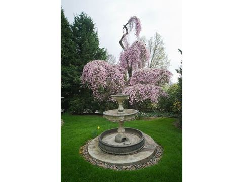
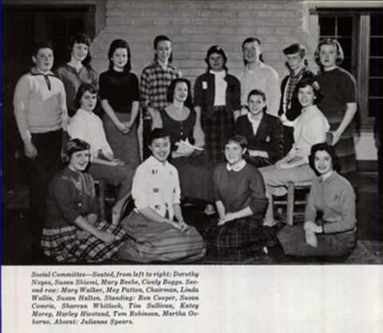
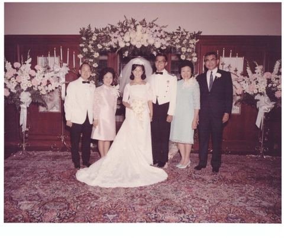

アメリカ日系一世 ロバート汐見の足跡（5）
アメリカン・ドリーム
戦後、ポートランドに戻ってからのロバート汐見の人生はアメリカン・ドリームを体現するものであった。
ロバートは名医として知られ、飛行機で診察を受けに来る患者もいたと言う。真偽の程は判らないが、当時日雇いが日給10ドル程度だった頃に1回300ドルの手術を午前と午後に１回ずつ行ったとも言わている。
自宅兼医院を構えたワシントン・パークの東側、サウス・ビスタ・アベニューは、当時メイド以外の有色人種が居住を許されない地域であった。どの様な経緯でロバートがその地域に住居を購入する事が出来たのかは分からないが、ポートランドでも長く続いた人種差別の壁を破った画期的な出来事であったと言う*。
この家は今でもポートランドにあり、不動産売買サイトで外観や室内が見られたが、裏庭には日本より移植したと思われる大きな枝垂れ桜があり、ロバートの望郷の念を感じる。花盛りには観光バスが横付けしたと言う。（写真１）

娘のスーザンとキャロルはリベラルな教育方針で知られるキャトリン・ガベル・スクールに通った。学校年鑑に写るスーザンは日本人の面立ちながら自由闊達なアメリカンガールの表情が興味深い。（写真２）次女のキャロルはスタンフォード大学に進学し、現在はカリフォルニア郊外のロス・アルトスで夫君と暮らしている。
写真２ ケイトリン・ゲイブル・スクール1958年学校年鑑より（前列左から2番目がスーザン）

尚、ロバートはオレゴン大学への母校愛が深く、アメリカン・フットボールの試合には家族揃ってスクールシンボルの白いカーネーションと緑の”O”を誇らしく襟にあしらい、愛車の1949年型パッカードに乗って大学のあるユージンまで繰り出したと言う。（写真３）
写真３ 1949年型パッカード（Wikipedia「パッカード」より引用）
後にロバート一家は近隣のサウスウェスト・パークプレイスに自宅を移した。男爵邸を移築したという。次女キャロルより自邸での結婚式の写真をご提供頂いた。（写真４）家族ぐるみの交遊があり、結婚式にも出席した夏目漱石の曾孫ケン・マックレイン氏は｢数多くの列席者と自庭の噴水からリビングルームまで続く長いバージンロードは、教会か大きな披露宴会場の様だった。｣と語る。

ロバートは余暇の多くを庭仕事に費やし、よく庭師に間違われたと言う。
*｢Robert Shiomi｣ Isaac Laquedem ブログ 2004年5月9日付
http://isaac.blogs.com/isaac_laquedem/2004/05/robert_shiomi.html
**住所は1111 SW Vista Avenue、後に転居した自邸は2370 SW Park Placeである。